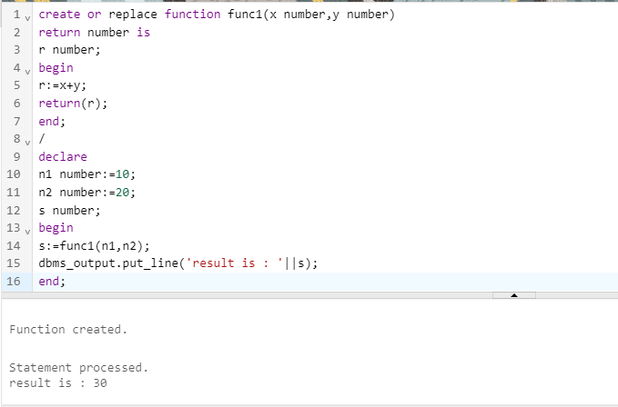
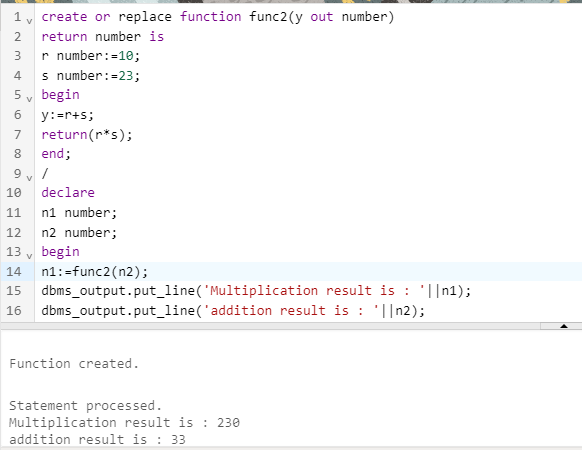
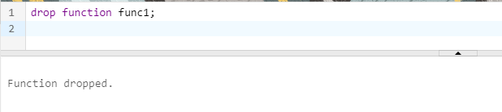

FUNCTION
A function is a named PL/SQL block like procedure that can accept parameters and be invoked. Generally speaking, a function is mainly used to compute a value. Functions and procedures have a similar structure, except that the functions have a RETURN clause, i.e. a function must return a value to the calling environment.
Like a procedure, a function has a header, a declarative section, an executable section, and an optional exception-handling section. A function must have a RETURN clause in the header section and at least one RETURN statement in the executable section.
Functions can be stored in the database as a schema object for repeated execution. A function stored in the database is referred to as a stored function.
Functions promote reusability and maintainability. When validated they can be used in any number of applications. If the processing requirements change, only the function needs to be updated.
You can create a new function with the CREATE FUNCTION statement, which may declare a list of parameters, must return one value, and must define the actions to be performed by the standard PL/SQL block.
Syntax:-
CREATE [OR REPLACE] FUNCTION function_name [parameters]
[(parameter_name [modes] datatype [, ...])]
RETURN return_datatype
IS / AS
BEGIN
function_body statements;
END [function_name];
Calling a Function
function_name(parameters..);
Creation and execution of function:-

TYPES OF FUNCTION:-
1.Named
2. Stored.
MODES OF PARAMETERS:-
1. IN(DEFAULT)
2. OUT
3. IN OUT
1.IN MODE
The IN parameter can be referenced by the procedure or function. The value of the parameter cannot be overwritten by the procedure or the function.
Examples:-
create or replace function func1(x number,y number)
return number is
r number;
begin>br>
r:=x+y;
return(r);
end;
/
declare
n1 number:=10;
n2 number:=20;
s number;
begin
s:=func1(n1,n2);
dbms_output.put_line('result is : '||s);
end;
output:-
2.OUT MODE
The OUT parameter cannot be referenced by the procedure or function, but the value of the parameter can be overwritten by the procedure or function.
Examples:-
create or replace function func2(y out number)
return number is
r number:=10;
s number:=23;
begin
y:=r+s;
return(r*s);
end;
/
declare
n1 number;
n2 number;
begin
n1:=func2(n1,n2);
dbms_output.put_line('Multiplication result is : '||n1);
dbms_output.put_line('addition result is : '||n2);
end;
output:-

3. IN OUT MODE
The INOUT parameter can be referenced by the procedure or function and the value of the parameter can be overwritten by the procedure or function.
DROPPING A function:-
To drop a function ,DROP FUNCTION statement is used .In order to drop a function,one must either own the function or have DROP ANY FUNCTION system privilege.
syntax:-
DROP FUNCTION function_name;
Example:-
